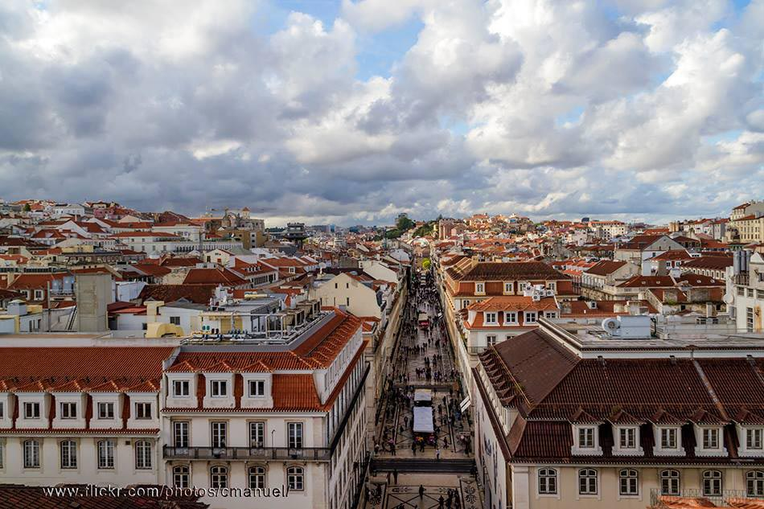
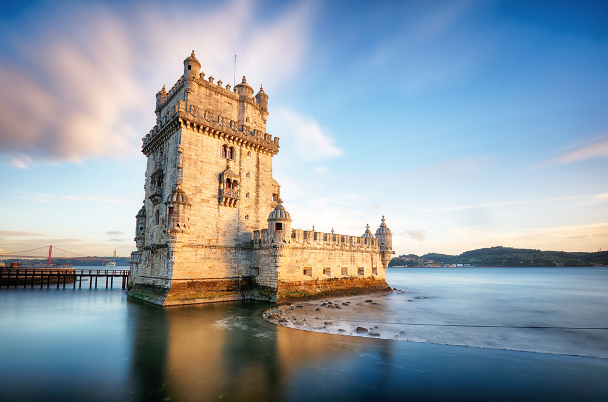
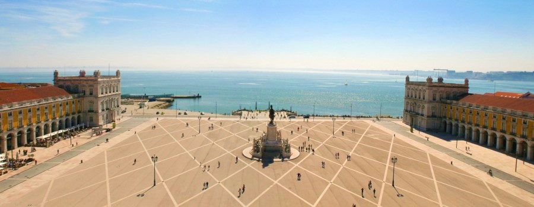
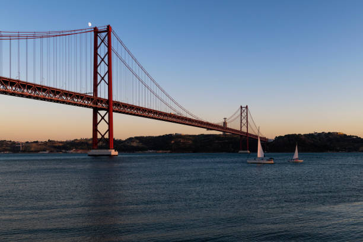
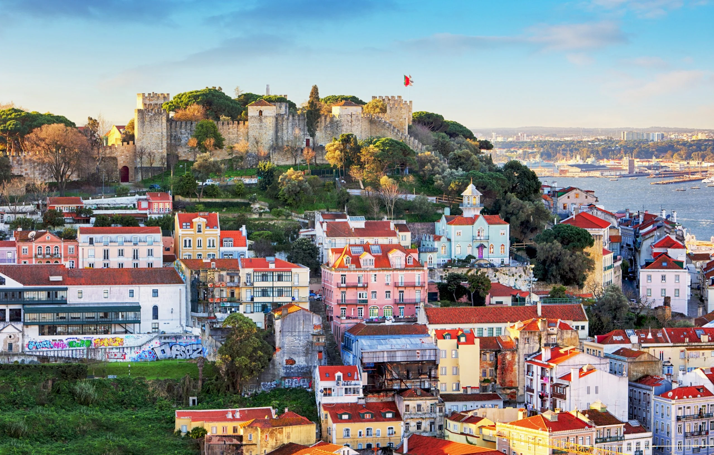
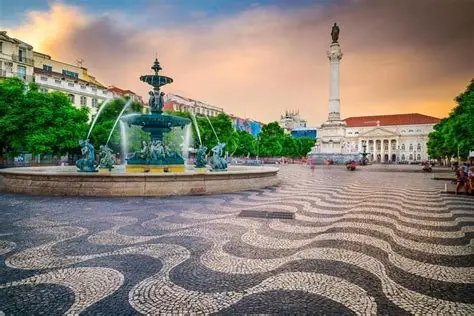

Multimédia
Nesta página encontra conteúdos multimédia sobre Lisboa.
Fotografias | Vídeo | Poema
Fotografias








Vídeo
Poesia
Lisboa, cidade bela,
À beira do Tejo azul,
És de Portugal a estrela,
A brilhar de norte a sul.